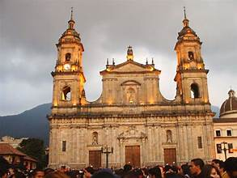
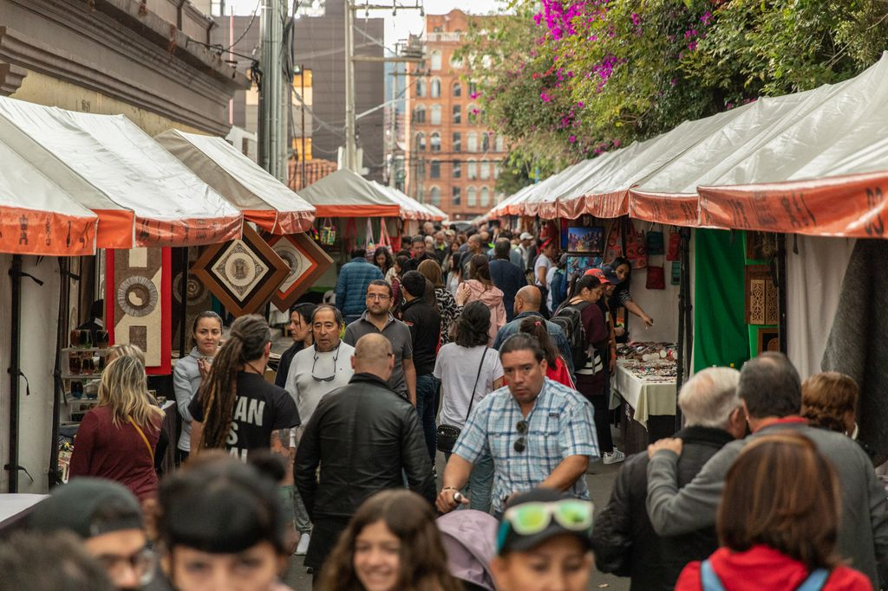
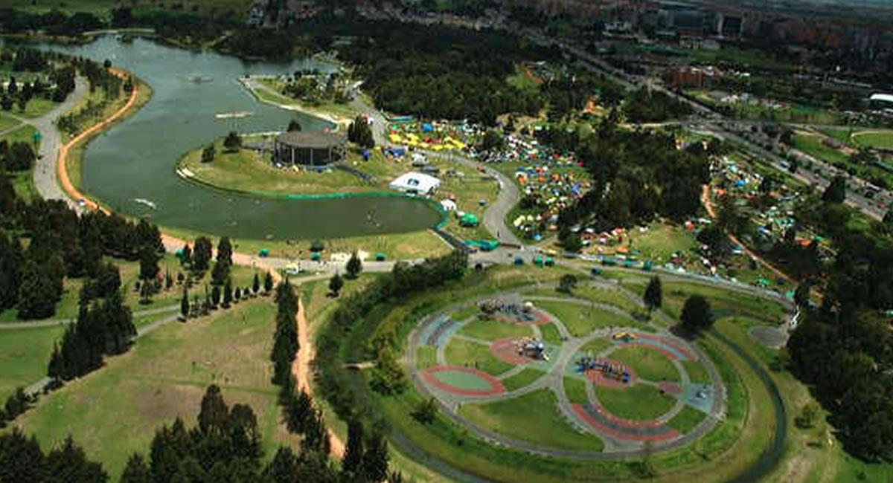
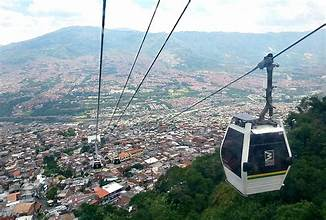
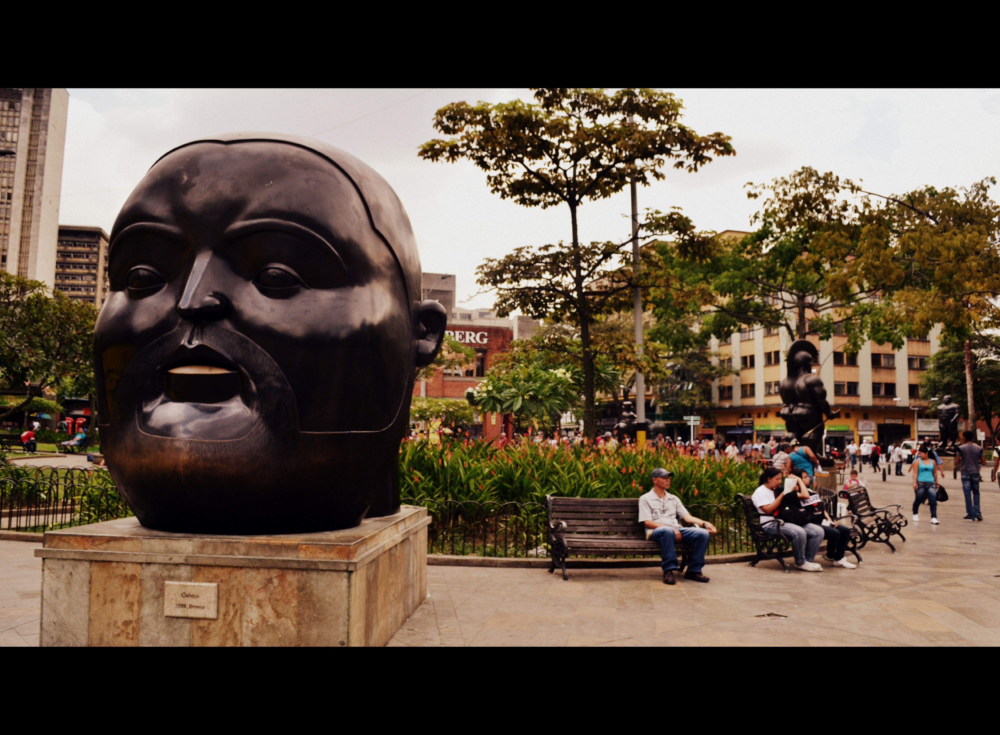
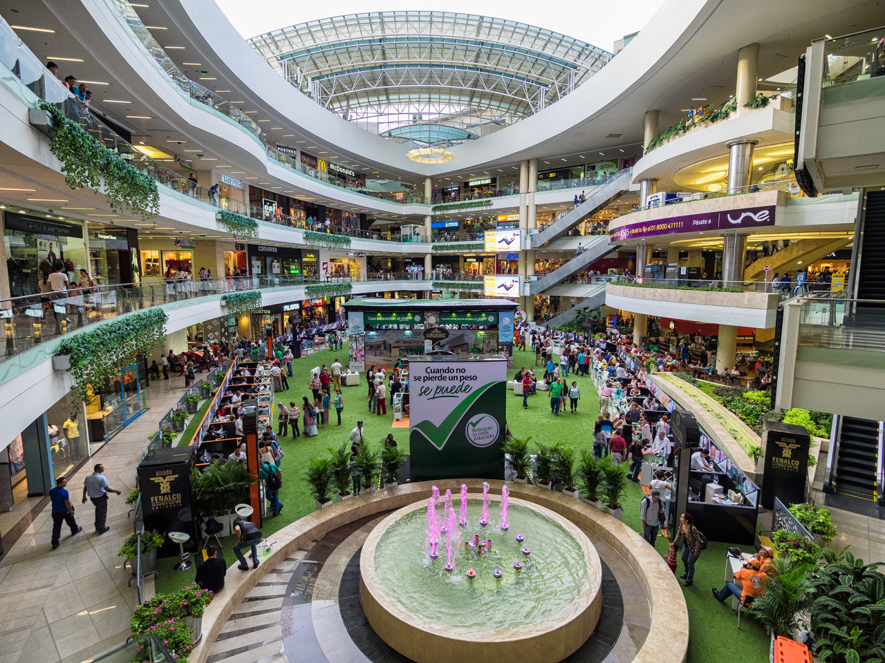
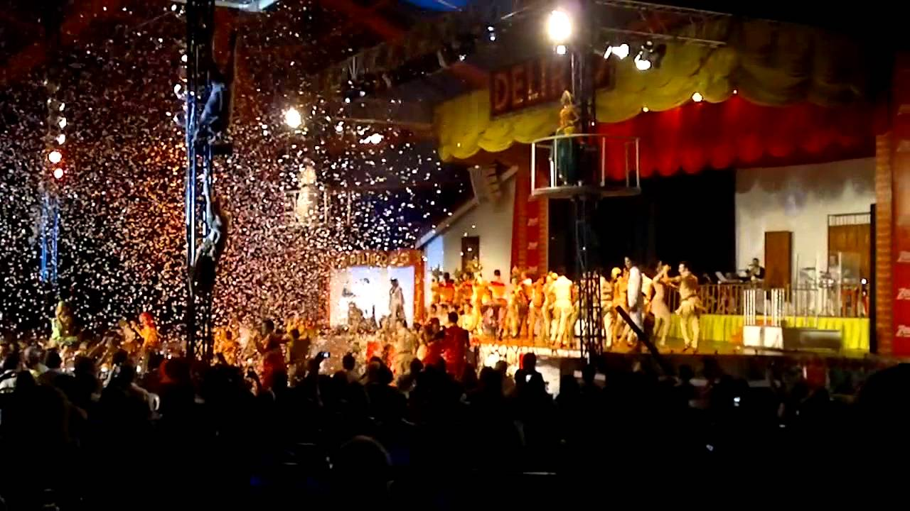
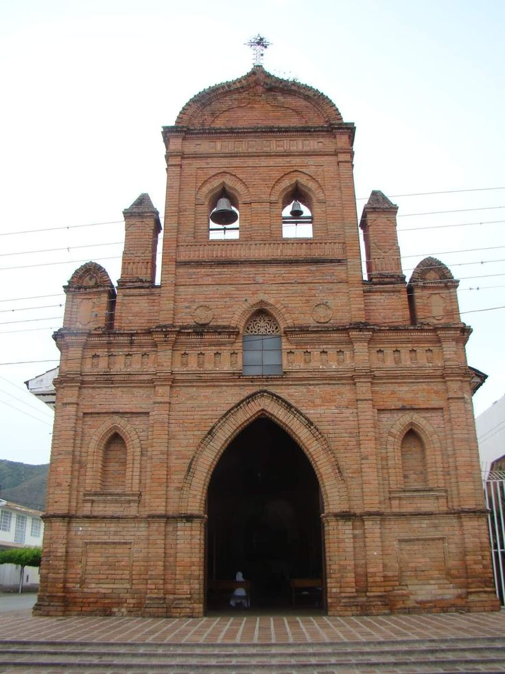
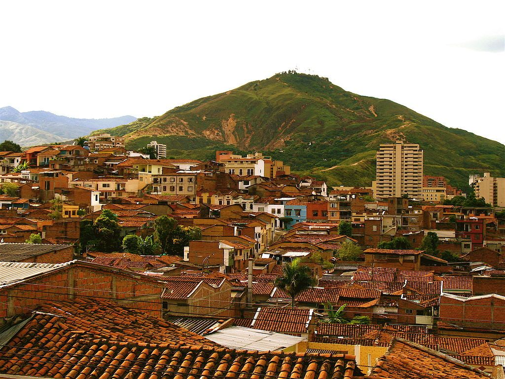

TOP TOURIST SPOT IN COLUMBIA
BOGOTÁ COLUMBIA
Catedral Primada
Bogotá’s Catedral Primada is a must-visit destination for anyone who appreciates beautiful architecture. Located in the heart of the La Candelaria neighborhood, the cathedral has a stunning neoclassical design that dates back to the early 19th century.
This beautiful cathedral is not only a place of worship, but also a cultural landmark representing the city’s history and heritage. As you explore the magnificent interior, you’ll discover intricate stained glass windows, impressive religious sculptures, and beautiful side chapels.
Be sure to also take a stroll around Plaza de Bolívar, the bustling square surrounding the cathedral, to get a true sense of the city’s vibrant atmosphere.

Usaquen Market
The Usaquén Market is a popular weekend destination in Bogotá, offering visitors a unique blend of traditional crafts, delicious local cuisine, and lively street performances. The market stands out as a hub for local artists and food vendors, giving tourists an authentic taste of Colombian culture.
Located in the heart of the charming Usaquén neighborhood, the market is teeming with vibrant colors and alluring smells. You’ll find an assortment of handmade crafts like textiles, leather goods, and jewelry, making it a great destination for some souvenir hunting. Additionally, the vast array of mouth-watering street food ensures that even the pickiest eaters find something to suit their taste buds.

Simon Bolívar Park
Simón Bolívar Park, one of Bogotá’s largest and most visited green spaces, offers a relaxing escape from the bustling city streets.
With an abundance of recreational activities, you’ll never find yourself at a loss for things to do. Rent a paddleboat and explore the picturesque lake, or challenge your friends to a game of soccer, beach volleyball, or tennis.
Or just enjoy a leisurely stroll, wander along the tree-lined paths, marvel at the park’s diverse flora, and be sure to visit the smaller parks and monuments nestled within, such as the Children’s Park, the Forest of Stories, and the Simon Bolivar Monument. There is even an amusement park.

MEDELLIN COLUMBIA
The Medellin Metrocable
Medellin lies in a big Andean bowl, and the best way to take in the panorama is simply to hop on public transportation and connect to the Medellin Metrocable.
These futuristic cable cars soar above the city into the surrounding hills, offering unrivaled views that are perfect for avid photographers. One option is to ride Line J over social housing towers and smaller shantytowns to an outstanding overlook near the final station at La Aurora.
A more popular thing to do, however, is take Line L up to Arvi Park, an urban oasis of forested hills that feels a world away from the city center. This vast park is the perfect getaway for nature lovers, with peaceful walking trails and plenty of food and craft vendors to satisfy your every need.

Plaza Botero
Hometown hero Fernando Botero donated 23 of his larger-than-life sculptures to the city of Medellin, and you'll find them sprinkled around the aptly named Plaza Botero (near the Parque Berrio metro station).
From rotund Roman legionaries to overstuffed animals, these portly figures have become symbolic of downtown Medellin and are surely some of the most photographed artworks in all of Colombia. Their setting against the ornate black-and-white patterns of Rafael Uribe Uribe Palace of Culture only highlights the overall appeal.

Shopping in Downtown Medellin
The area south and west of Plaza Botero is a veritable shopping paradise. Just wander down the pedestrian-only Calle 52, and you'll soon be in the heart of it. The entire area is jammed full of shops selling just about anything you can imagine. Many of the buildings have long galleries that create an almost warren-like area of small shops. Wander into one, and you aren't quite sure where you'll exit.
Fortunately this huge shopping area is well organized by item. If you are looking for fabric for curtains for example, all the fabric sellers are located together. Need a power tool? All the hardware stores are right next to one another.
One building that is not to be missed is the National Palace Mall. This spectacular building has been wonderfully restored to its former glory complete with massive chandeliers and skylights. This is the place in Medellin to come to for the latest fashions.

CALI COLUMBIA
Delirio
If you can’t get enough of salsa (and when it’s good, trust me, you can’t), book ahead to see Cali’s famous salsa circus, Delirio.
These dancers have traveled the world performing, and they only hold shows here on the last weeked of each month, so plan your trip around one! Shows feel like a combination of music, dancing, and Cirque de Soleil with a touch of cabaret.
The salsa dancers are phenomenal, having grown up in Cali’s salsa schools – we’re talking kids and adults performing at the highest level.
Shows are held in a circus-like tent that seats 1,000 and in between acts you’re allowed to get up and dance.

Capilla La Ermita
This is the church everybody visits in Cali because, architecturally speaking, it’s truly beautiful.
Built in an ornate neo-Gothic style and located in the center of town, construction on the opulent chapel began in 1930 and finished in 1948. The design incorporates Dutch windows, French church bells, Italian marble, and inspiration from a cathedral in Germany.
It’s impossible to miss the bright white exterior and you can venture inside, though it is quite small.
Keep strolling this area for a look at some well-preserved colonial architecture and check out Plaza de los Poetas with its statues of famous writers.

Barrio San Antonio
The bohemian neighborhood of Cali, San Antonio is the oldest part of the city and it’s great for a meandering walk through narrow streets.
This is where you’ll find much of the town’s history, with plenty of intricately designed buildings, theaters, and artsy cafes where you can stop for a bite and some people watching.
Previously, lots of Colombian artists and writers lived in this area, but now it’s a hip spot for drinking coffee.
If you head up the hill to the Iglesia San Antonio, you can see the church and get some great views of Cali and the valley below.

BACK